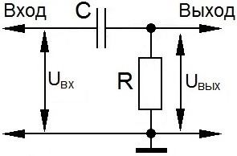
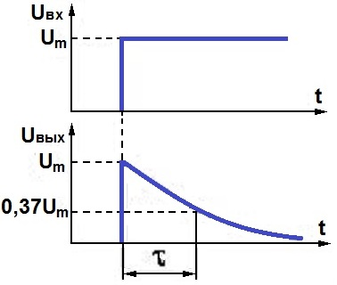
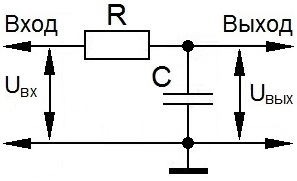
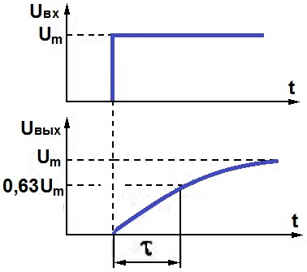

Дифференцирующие и интегрирующие цепи
На логических элементах собираются всякие формирователи, генераторы импульсов, устройства задержки. Для этого используют различные сочетания логических элементов с конденсаторами и резисторами. Наиболее употребительными являются RC-цепи, изображенные ниже.
Дифференцирующая цепь


Рис. 1 - Дифференцирующая цепь и форма напряжения на входе и выходе
Соединение резистора и конденсатора приведенная на рис. 1 называется дифференцирующей (укорачивающей) цепью. На графиках рис. 1 показаны эпюры напряжения на входе и выходе этой цепи.
Допустим конднсатор разряжен. При подаче на вход дифференцирующей цепи импульса напряжения конденсатор сразу начнет заряжаться током, проходящим через него самого и резистор. Сначала ток скачком возрастает до максимального значения Um, затем по мере увеличения заряда конденсатора постепенно уменьшится до нуля по экспоненте. Когда через резистор проходит ток, на нем образуется падение напряжения, которое определяется, как
U=iR,
где i - ток заряда конденсатора.
Поскольку ток изменяется экспоненциально, то и напряжение будет изменяться экспоненциально от максимума до нуля.
Падение напряжения на резисторе является выходным. Его величину можно определить по формуле
Uвых = Ume-t/τ.
Величина τ называется постоянной времени цепи и соответствует изменению выходного напряжения на 63% от исходного (e-1 = 0,37). Время изменения выходного напряжения зависит от сопротивления резистора и емкости конденсатора и, соответственно, постоянная времени цепи пропорциональна этим значениям, т. е.
τ = RC.
Если емкость в Фарадах, сопротивление в Омах, то τ в секундах.
Интегрирующая цепь
Если поменять местами резистор и конденсатор, как показано на рисунке 2, то получим интегрирующую (удлиняющую) цепь.


Рис. 2 - Интегрирующая цепочка и формы напряжения на входе и выходе
Выходным напряжением в интегрирующей цепи является напряжение на конденсаторе. Если конденсатор разряжен, оно равно нулю. При подаче импульса напряжения на вход цепи конденсатор начнет накапливать заряд, и накопление будет происходить по экспоненциальному закону и напряжение на нем будет нарастать по экспоненте от нуля до своего максимального значения. Его значение можно определитиь по формуле
Uвых = Um(1 - e-t/τ).
Постоянная времени цепи определяется по такой же формуле, как и для дифференцирующей цепи и имеет тот же смысл.
Для обеих цепей резистор ограничивает ток заряда конденсатора, поэтому чем больше его сопротивление, тем больше время заряда конденсатора. Также и для конденсатора, чем больше емкость, тем большее время он заряжается.
Если после дифференцирующей цепи поставить инвертор, то наблюдается следующая картина. В исходном состоянии на входе инвертора логический 0 (резистор сидит на корпусе), а на его выходе логическая 1. При подаче скачка напряжения в течении некоторго времени на входе инвертора будет присутствовать логическая единица, затем спустя какое-то время напряжение на входе уменьшится до значения, меньше порогового (т. е. до логического 0), в результате чего на выходе инвертора сначала напряжение упадет до логического 0, затем опять поднимется до логической 1, т. е. будет сформирован импульс.
Источники
vpayaem.ru - Что такое интегрирующие и дифференцирующие цепи?